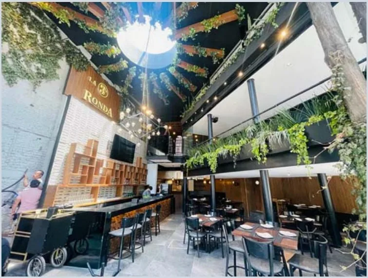
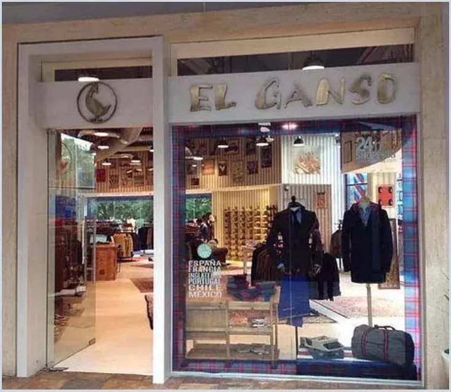
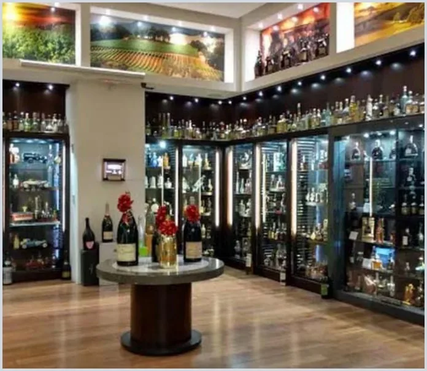
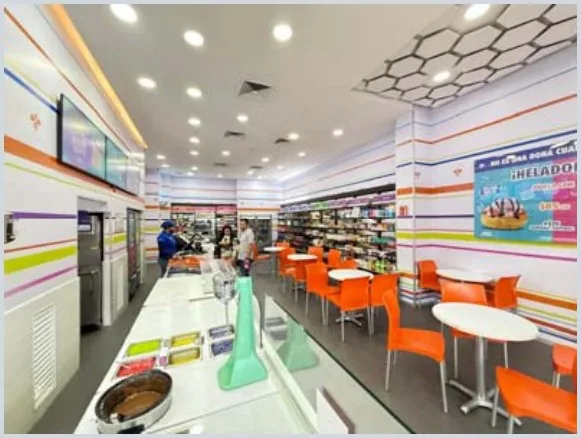

Portafolio.
Más de 20 proyectos: retail de lujo, restaurantes, corporativos, residencias e infraestructura. Selecciona cualquier fotografía para verla completa.


Chanel Artz
Construcción de local a base de estructura metálica, cancelería de cristal y techumbre de madera, para la apertura de la boutique Chanel en Plaza Artz.

La Nonna Polanco
Reacondicionamiento integral de local comercial para el restaurante italiano La Nonna: obra general, instalaciones, acabados, iluminación y carpintería.


Piacevole Santa Fe
Diseño y reacondicionamiento integral de restaurante: obra general, instalaciones, acabados, iluminación y carpintería de autor.


Cielito Querido Café
Creación de cafetería de acceso público: albañilerías, instalaciones electromecánicas, acabados, cancelería y herrería.


Bar BF Santa Fe
Diseño y reacondicionamiento de dinner club: obra general, instalaciones, acabados, iluminación y carpintería a medida.

Sonora Asador Añejo
Diseño y reacondicionamiento de restaurante: obra general, instalaciones, acabados, iluminación y carpintería.
Penny Lane Bosques
Reacondicionamiento de boliche restaurante-bar en colaboración con Desarrollos Confianza y Grupo Hunan: obra general, instalaciones, acabados, carpintería, herrería y cancelería.

Costanza Polanco
Aplicación de acabados y decoración, iluminación e instalaciones electromecánicas para el restaurante y mercado Costanza, en colaboración con Construtech.

Más proyectos.
Retail y restaurantes

La 3ra Ronda Nápoles
Louisiana 4, Nápoles, CDMX

La Parroquia Santa Fe
Juan Salvador Agraz 44, Santa Fe, CDMX

El Ganso Plaza Antara
Plaza Antara, Polanco, CDMX

La Europea
Plaza Carso y Nima Bay, CDMX / Vallarta

Nutrisa Antea y Galerías Querétaro
Av. 5 de Mayo, Querétaro
Nutrisa Eje 8
Av. Popocatépetl (Eje 8 Sur) 488, CDMX
Waldo's Plaza Galerías Aguascalientes
Av. Independencia 2351, Aguascalientes
Waldo's Nopalera
Av. Tláhuac 5570, CDMX
Corporativo y residencial


Corporativo Ledvance
Av. Tepalcapa 8, Tultitlán, Edo. Méx.


Hablemos de tu proyecto.
Cuéntanos qué estás construyendo o remodelando y te contactaremos para agendar una visita o llamada.
Solicitar cotizaciónVer portafolio